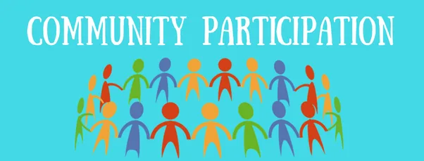

Expanded Nursing Uganda Explanation
Community Participation should be understood beyond a short definition. Link the concept to patient history, focused assessment, common risks, nursing priorities, documentation and evaluation of outcomes.
01 Community Participation
Community participation is the process by which community members are empowered to take part in problem identification, setting priorities, identifying possible solution, taking decisions, implementing, monitoring and evaluating activities for their own health and development.
Community participation is a process where a community is fully involved in identification of its problems, making decisions on interventions, and implementation. Community participation is not just utilization of services and being passive users. This follows Community Mobilization
02 Principles of Community Participation
- Bottom-up approach: Community participation involves starting from the grassroots level and engaging communities in decision-making processes regarding issues that directly affect them. It recognizes that communities have valuable knowledge and perspectives that should be considered in shaping interventions and programs.
- Democratic process: Community participation ensures that everyone in the community has the opportunity to be involved and consulted. It promotes inclusivity, transparency, and equal participation, allowing community members to voice their opinions, contribute to discussions, and have their voices heard.
- Enabling environment : Community participation creates a supportive environment that enables communities to develop and advance. It empowers community members to take ownership of programs and initiatives, fostering a sense of responsibility, commitment, and accountability.
- Shifting power dynamics : Community participation shifts the traditional power dynamics from external experts to the communities themselves. It recognizes the expertise and lived experiences of community members and involves them in all stages of the process, including
- needs assessment,
- priority setting
- planning
- implementation, and
- monitoring and evaluation of programs.
03 Types of participation.
- Manipulative participation : In this type, participation is merely symbolic, and individuals are given positions on official boards or committees without real decision-making power. Their representation is used as a pretense to create an illusion of community involvement.
- Passive participation : In passive participation, community members are informed about decisions or actions that have already been taken by external agencies. They are not actively involved in the decision-making process and their role is limited to receiving information or providing feedback after the fact.
- Participation by consultation : This type involves consulting community members, usually by external agencies, to gather their opinions or feedback. However, the decision-making power remains with the professionals or experts, and community input may not be fully considered in the design or implementation of interventions.
- Participation by material incentives : In this form of participation, individuals are motivated to participate by receiving material incentives such as food, cash, or other resources. Their involvement is primarily driven by the tangible benefits they receive in return for their time, labor, or resources.
- Functional participation : Functional participation occurs when community members are involved in specific tasks or activities that are predetermined and related to a project. Their participation typically occurs after major decisions have already been made, and their role is limited to carrying out specific objectives rather than being involved in the decision-making process.
- Interactive participation : Interactive participation involves joint problem-solving and action planning between community members and external agencies. It fosters active engagement and empowers local groups to take control over local decisions. This type of participation recognizes the importance of community input and ensures that people have a stake in the decisions that affect them.
- Self-mobilization : Self-mobilization occurs when community members take independent initiative to address and change systems or situations without relying on external institutions. It is a self-driven form of participation where communities take ownership of their own development and work towards achieving their goals.
04 Indicators for community participation
- People working together as a group: This indicator assesses the formation and functioning of community groups or clubs, such as youth groups, women’s groups, or other community-based organizations. It demonstrates the level of collective action and collaboration within the community.
- Increased participation of women : This indicator looks at the involvement of women in decision-making processes at both household and community levels. It reflects the empowerment of women and the recognition of their voices and contributions in community affairs.
- Community contributions : This indicator measures the extent of community involvement in development activities and projects. It includes contributions in terms of labor, materials, and financial resources. The indicator demonstrates the level of ownership and commitment of community members.
- Documentation of activities and accomplishments: Keeping records of community activities, such as minutes of meetings, progress reports, or project documentation, serves as an indicator of community participation. It shows the community’s engagement in planning, implementation, and monitoring of initiatives.
- Utilization of local resources and services: This indicator assesses the extent to which community members utilize local resources and services for their own development. It reflects the community’s self-reliance and ability to meet their needs through local means.
- Response to community mobilization : This indicator measures the level of response and engagement of community members when mobilized for community activities or projects. It indicates the level of interest, commitment, and active participation within the community.
- Diversity of roles among community leaders : This indicator focuses on the distribution of leadership roles and responsibilities among community members. It reflects a decentralized and inclusive approach to decision-making and community development.
- Engagement in seeking external support : This indicator assesses the community’s proactive efforts in seeking external support, both technical and material, to complement their own resources and capacities. It demonstrates the community’s networking and resource mobilization abilities.
05 **Importance of Community Participation.**
- Decision-making authority: Community participation ensures that individuals have the right to be involved in making decisions that directly impact them. It promotes democratic principles and gives community members a voice in shaping their own development.
- Increased utilization of services : When community members actively participate in planning and implementing projects or services, they are more likely to use and benefit from them. Their involvement fosters a sense of ownership, making them more invested in utilizing the resources available to them.
- Development of responsibility and ownership : By actively participating in community initiatives, individuals develop a sense of responsibility and ownership. They take pride in their contributions and are more likely to take care of and sustain the activities or programs they have helped create.
- Enhanced sustainability : Community participation contributes to the long-term sustainability of initiatives. When community members have a sense of ownership, they are more committed to maintaining and improving projects, ensuring their continued success even after external support diminishes.
- Increased resources : Community participation brings forth additional resources such as labor, materials, financial contributions, and volunteered time. With more resources available, planned activities can be executed more effectively, leading to better outcomes.
- Improved planning and implementation : When community members participate in the planning and implementation processes, there is a greater understanding of the objectives and rationale behind the activities. This shared understanding leads to more efficient planning and smoother implementation.
- Confidence and unity building : Active community participation fosters confidence among individuals as they witness the positive outcomes resulting from their contributions. It also builds a greater sense of unity and cohesion within the community, as members work together towards common goals.
- Community empowerment and capacity building : Participation empowers community members by giving them a sense of agency and control over their own development. Through participation, individuals gain valuable skills, knowledge, and experience, contributing to their personal growth and the overall capacity of the community.
Ways in which community members participate in development activities / projects
- They use the service provided
- They provide resources (labor, materials, money, and spare their time) for pre-planned activities.
- They can monitor and evaluate programs of planned activities.
- They can participate in making decisions with plans
06 Factors that promote community participation.
- Good leadership : Effective leadership builds trust and confidence among community members, ensuring that their resources will be utilized transparently and for their benefit. Trust in leaders encourages active participation.
- Good planning : When community members are involved in the planning process, they have a sense of ownership and are more likely to participate actively in the activities. Their input in identifying needs, setting goals, and determining implementation strategies increases their commitment.
- Clear understanding of project goals and stakeholders’ roles : Community members should have a clear understanding of the project’s objectives, expected outcomes, and the roles and responsibilities of different stakeholders. This clarity helps individuals see the value of their participation and how their contributions contribute to the overall success of the project.
- Effective communication : Transparent and consistent communication about the project’s purpose, challenges, benefits, and the commitment required from participants is crucial. When people have a comprehensive understanding of the project, they are more motivated to take action.
- Knowledge, attitudes, and skills : Community members need to have the necessary knowledge, attitudes, and skills to actively participate in project activities. Providing training and capacity-building opportunities ensures that individuals feel capable and confident in their roles.
- Positive attitudes : A positive and favorable attitude towards working with others fosters collaboration and cooperation. Creating an environment where community members, leaders, and project staff have a positive attitude towards working together encourages greater participation.
- Cooperation and collaboration : Building strong relationships and fostering cooperation between the project staff and the community is essential. Collaboration ensures that everyone is working towards a common goal and that decisions are made collectively.
- Involvement of relevant sectors: Engaging and involving various sectors within the community ensures that different perspectives are considered, increasing the diversity and effectiveness of community participation.
- Income-generating activities : Encouraging the community to engage in income-generating activities fosters economic empowerment and motivates individuals to actively participate in community initiatives. Economic opportunities can enhance the overall well-being of community members and strengthen their commitment to the project.
07 Levels of Community Participation
There are four levels of community participation:
1. Participation in the use of services provided : This level involves actively mobilizing the community to utilize the services that are provided, such as community programs or initiatives. Community members are encouraged to take advantage of the services available to them.
2. Participation in pre-planned programs: At this level, the program content is developed outside the community, and community committees or representatives are invited to participate in the implementation process. For example, communities may be involved in activities related to the protection of water sources.
3. Community involvement based on local assessment and decision-making: This level of participation involves assisting community committees or groups in developing essential skills for analysis, problem identification, priority setting, and action planning. The community is actively engaged in assessing local needs, making decisions, and implementing appropriate plans of action. Examples of programs at this level include AIDS prevention programs and community-based health care programs.
4. Community empowerment : At this highest level of participation, the community becomes sufficiently aware and empowered to assume full control of the development process. Community members are actively involved in all aspects of decision-making, planning, implementation, and evaluation of programs and initiatives. Achieving community empowerment requires adequate preparation and capacity-building of the facilitators or personnel involved in supporting the community’s development journey.
N.B: It is important to note that progressing from one level to another may take time and requires careful preparation and facilitation to ensure the meaningful and effective engagement of the community throughout the process.
08 Factors that hinder community participation and possible solutions:
- No. Factors that Hinder Possible Solutions
- 1. Poor leadership – Selecting good leaders
- – Encouraging teamwork
- 2. Political differences – Promoting mature politics
- 3. Lack of transparency – Emphasizing transparency
- 4. Poor planning – Implementing good planning
- – Setting clear and realistic objectives
- 5. Abrupt changes to set schedules – Sticking to the schedule
- 6. Failure to involve community – Actively involving community members
- – Ensuring effective communication and engagement
- 7. Higher expectations – Encouraging openness to self-reliance
- – Managing expectations through clear communication
- 8. Conflicts among beneficiaries and source providers – Continuous sensitization with transparency
- 9. Poor motivation – Providing motivation, encouragement, and recognition
- – Conducting effective sensitization and training programs
- 10. Conflicts with cultures and traditions in the community – Understanding and respecting community cultures and traditions
- 11. Disrespect towards community members – Fostering respect for community members
- 12. Natural calamities (e.g., earthquakes, floods, etc.) – Seeking assistance from community leaders and relevant organizations
Effective community participation results
Community assumes responsibility of;
- ∙ Sense of ownership
- ∙ Self-reliance
- ∙ Acquisition of skill & abilities & abilities to sustain the PHC process.
- ∙ Efficiency & effectiveness in PHC implementation.
- ∙ Equitable distribution of resources among others
09 Nursing Uganda Clinical Lens
Use Community Participation as a practical nursing topic, not only a memorized definition. Move from individual illness to prevention, population risk, health education and continuity of care.
- What to understand first: define community participation, identify the normal or expected pattern, then explain what changes when the patient is unwell.
- Why it matters in care: the nurse must recognize risk early, explain findings clearly, document accurately and know when to escalate.
- How to revise it: connect each point to assessment, nursing diagnosis or care problem, intervention, rationale and evaluation.
10 Assessment Guide
- Who is affected, where they live, risk factors, resources and barriers to care.
- Environmental hygiene, nutrition, immunization, water, sanitation and health-seeking behaviour.
- Community beliefs, leaders, household practices and surveillance data.
11 Nursing Priorities, Rationales and Outcomes
- Promote prevention, early detection, referral and community participation.
- Use clear health education matched to literacy, culture and available resources.
- Document findings and coordinate with community health structures.
The rationale for these priorities is patient safety: nursing actions should prevent deterioration, reduce discomfort, support recovery and create clear evidence for the next caregiver.
- Expected outcome: The community understands the message, risk is reduced and follow-up or referral pathways are active.
12 Patient Teaching and Revision Check
- Explain community participation in simple language the patient or caregiver can repeat back.
- Teach warning signs, medicine or follow-up instructions, hygiene or lifestyle points where relevant.
- For exams, prepare a short answer using: definition, causes or risk factors, signs, assessment, management, complications and prevention.
- For ward practice, document baseline findings, actions taken, patient response and the plan for review.
Illustrations and Diagrams (7)



Related Video Lectures
Watch nursing lecture videos on YouTube for this topic. Opens in a new tab.
Watch on YouTubeExternal link: YouTube may use its own cookies and terms. Nursing Uganda is not affiliated with YouTube.